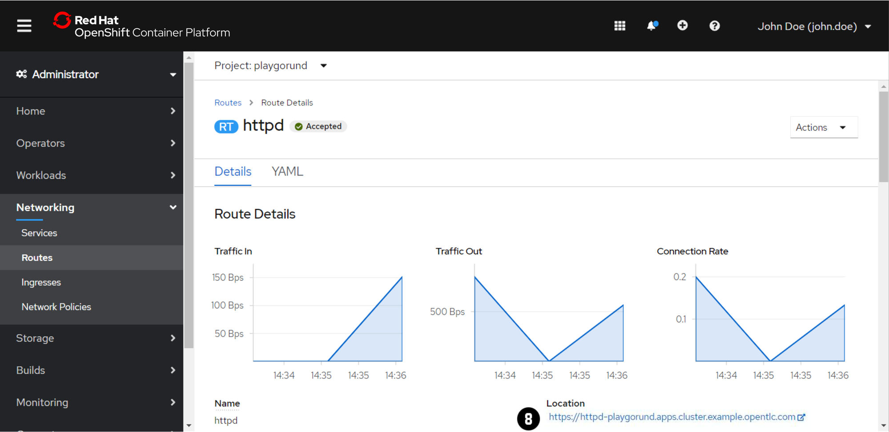

Exercise 3 - Networking¶
Each Pod has its own IP address in order to access the application on it over the network.
However,Pods are non-permanent resources which are created and destroyed by the Deployment dynamically.
Therefore the IP addresses of your application are changing dynamically too and it is difficult to keeps track of which IP address to connect to.
Services¶
The Service is an abstract way to expose an application running on a set of Pods and load-balance the requests across them.
Instead of connecting to the IP addresses of the Pods directly you can connect instead to its Service.
Check out the Kubernetes Documentation for more information about Services.
Routes¶
The Route allows to expose services through HTTP(S) via a public DNS entry. This is needed to make Services accessible from outside of the cluster.
Check out the OpenShift Documentation for more information about Routes.
Note
For each exercise you can choose and only have to do either the 'Web Console' or the 'Command Line Interface (CLI)' section in oder to complete the exercise.
Create a Service¶
- Switch to the 'Administrator' view using the dropdown menu at .
- Navigate to 'Networking' → 'Services' .
- Switch to the your project using the dropdown menu at . In each of the exercise make sure that you are in your project context before you are making any changes.
- Press 'Create Service' .
- Let's create a
Servicefor the port8080. Copy the followingServicedefinition file to the editor and replace<port>and<app label>with the correct value:More detailed information about theapiVersion: v1 kind: Service metadata: name: httpd spec: selector: app: <app label> ports: - protocol: TCP port: <port>Servicedefinition file can be found in the Tab at . - Press 'Create' .
Create a Route¶


- Navigate to 'Networking' → 'Routes' .
- Press 'Create Route' .
- Set the 'Name' to
httpd. - Select the 'Service' you have created above in .
- Choose the 'Target Port'
8080from the dropdown menu . - Let's secure the
Routeby enabling the checkbox and selecting 'Edge' for 'TLS Termination' . - Scroll until the end of the page and press 'Create'.
- Open the link at the 'Route Details' page in order to test the route.

Important
At the beginning of the exercise make sure that you are in your project context.
oc project <project name>
Create a Service¶
- Create a
Servicefor the port8080of theDeploymentthat we have created in Exercise 2:oc expose deployment <deployment name> --port=<port> -
Inspect the
Serviceusing theoc getor theoc describecommand.oc get service -o wideoc describe service <service name>How many endpoints are connected to your
Serviceand why?Solution:
There are 2 endpoints connected to your
Service, you can figure that out by using theoc describecommand.[~] $ oc describe service <service name> ... Endpoints: <IP endpoint 1>:8080,<IP endpoint 2>:8080 ...The reason that there are 2 endpoints is that we have 2 replicas configured in the
Deployment. Let's compare the IP addresses of the endpoints with the IP address of eachPod. The IP address of thePodscan be retrieved using theoc get pods -o widecommand. As you can see theServiceis successfully connected to allPodsof yourDeployment.
Create a Route¶
- Create a
Routein order to make theServiceaccessible from outside of the cluster.oc create route edge httpd --service=<service name> - Inspect the new
Routeusing theoc getcommand.oc get routes - Try to connect to the
https://HOSTof theRouteusing the browser in order to test the route.